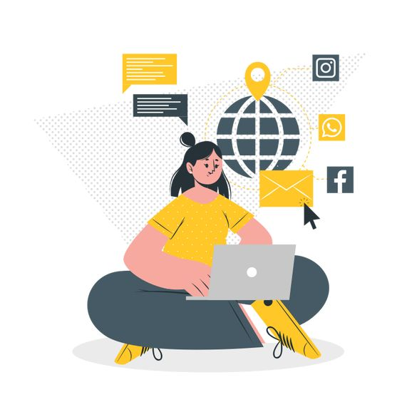
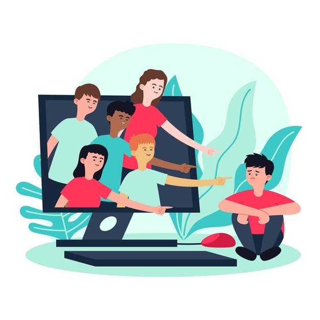

Общие понятия о детской безопасности в интернете
16 правил Интернет-безопасности для детей
Общие понятия о детской безопасности в интернете
Интернет позволяет получать тонны информации в одно мгновение. Но есть и обратная сторона медали — контент в Сети не всегда предназначен для психики ребёнка, поэтому нужно принимать меры по обеспечению безопасности детей в интернете.
В Беларуси действует закон «О защите детей от информации, причиняющей вред их здоровью и развитию». Закон запрещает распространение нежелательной информации среди детей в зависимости от их возраста. Это относится не только к интернету — фильмы в кино и книги, например, тоже попадают под ограничения.
Угрозы интернета для детей.
Нежелательный контент.
Это могут быть жестокие сцены насилия, причинение вреда живым существам, порнографические материалы и другое. Нужно понимать, что рано или поздно ребёнок столкнётся с подобным контентом, как бы вы ни старались это предотвратить. Важно сделать то, что в ваших силах, чтобы это не оставило сильного травмирующего отпечатка на психике сына или дочери.
Что делать для обеспечения безопасности ребёнка в Сети:
Если ребёнок маленький, рекомендуем установить родительский контроль. Существуют различные программы, которые ограничивают доступ к подозрительным сайтам, помогают контролировать действия и безопасность детей в Сети и лимитируют время пребывания в интернете. Родительский контроль также будет плюсом, если малыш учится в онлайн-школе. Можно ограничить доступ к социальным сетям, Youtube и другим платформам в часы занятий. Так ребёнок точно не станет отлынивать от просмотра уроков.
С этой задачей справляется мобильное приложение «Где мои дети». Программа позволяет контролировать использование смартфона ребёнком.
Вы узнаете:
Не сидит ли ребёнок в YouTube во время отдыха;
Не играет ли на телефоне вместо занятий;
Накой возрастной рейтинг у игр, в которые он играет.
Уделяйте время половому воспитанию детей. Поскольку эта тема табуирована в обществе, возможно, вам будет стыдно и неловко, но гораздо лучше, если ребёнок узнает достоверную информацию от вас, чем сомнительные вещи от кого-то во дворе, в школе или социальных сетях. Если идея поговорить о половых вопросах чересчур смущает, купите ребёнку хорошую книгу по теме.
Киберпреступность .
Под этим термином понимают широкий спектр нарушений закона — от вымогательства личных данных до вовлечения несовершеннолетних в торговлю наркотиками. Недавно на фейсбуке набрал популярность пост матери, рассказавшей о том, что её дочь-подросток чуть не устроилась на подработку курьером за 80 тысяч рублей в месяц. Скорее всего, девочка даже не понимала, что доставлять нужно будет запрещённые вещества, а не посылки.

Что делать, чтобы избежать этой опасности в интернете для детей:
Установите антивирус. Он будет блокировать подозрительные программы, которые ребёнок может нечаянно скачать на компьютер. Ими нередко пользуются хакеры, чтобы получить доступ к персональным данным. Кроме того, антивирус предупредит ребёнка о переходе по подозрительной ссылке, которая может позволить мошеннику дистанционно управлять устройством пользователя;
Учите ребёнка здравому смыслу. Он должен понимать, что некоторые вещи — например, имена и должности родителей, адрес, пароль от социальной сети и так далее — нельзя никому раскрывать. Объясните, что интернет позволяет любому человеку выдавать себя за кого угодно. Перед тем как встретиться с другом, которого нашёл в Сети, лучше поговорить со взрослыми. Здравый смысл — одно из главных правил безопасности детей в интернете.
Кибербуллинг.
Если ребёнок становится агрессивным, злым, раздражённым или дёрганным после общения в Сети, это может быть признаком травли или конфликтов. Возможно, малыш подвергается психологическому давлению, издевательствам или угрозам в интернете.
Что делать, если ребёнок столкнулся с кибербуллингом:
Обсудите с ребёнком ситуацию и дайте понять, что вы всегда его поддержите. Выясните, что могло послужить причиной происходящего, кто именно участвует в неприятном общении и как эти люди ведут себя в реальной жизни.
Лучший способ борьбы с агрессорами в Сети — игнорирование. Помогите ребёнку внести их в «чёрный список». Если в травле участвуют ученики школы, необходимо сообщить об этом учителю и школьному психологу. Если ситуация становится пугающей, соберите все доказательства (скриншоты, фото) и обратитесь в правоохранительные органы.
Если справиться самостоятельно у вас не получается, а учителя и администрация школы не хочет вмешиваться и остаётся в стороне, изучите портал Травли.NET, там вы сможете получить квалифицированную помощь о безопасности подростков в интернете и защите от кибербуллинга.
Чего делать не нужно.
Не рекомендуется наказывать за увиденный нежелательный контент. Например, если вы обнаружили в истории браузера порнографию, не ругайте сына или дочь, спокойно поговорите об этом. Если вы ещё не поднимали тему полового воспитания — самое время это сделать.
Не стоит маниакально контролировать все социальные сети ребёнка, особенно читать переписки. Чем старше сын или дочь, тем острее воспринимается ваше вторжение в личное пространство. Чрезмерный контроль за безопасностью ребёнка в Сети может оттолкнуть детей от вас. Стройте отношения на доверии. Обучайте ребёнка правилам безопасного поведения в интернете и соблюдайте их сами.
Обеспечение безопасности детей в интернете — это важно, но стоит быть реалистами: никогда не получится создать волшебный мыльный пузырь и оградить ребёнка от всего плохого, что существует в мире. Рано или поздно дети в интернете сталкиваются и с нежелательным контентом, и со страшными фильмами, и с травмами. Ваше дело — помочь, поддержать, всегда быть рядом. Всегда оставайтесь на стороне ребёнка.
16 правил Интернет-безопасности для детей.
1. Ограничить время провождения в сети.
2. Использовать средства обеспечения безопасности (антивирусная программа, настройки безопасного поиска, безопасный режим в соцсетях, использовать контентные фильтры).
3. Подключить у провайдера услугу «Детский Интернет».
4. «Родительский контроль». С помощью этой функции в системе Windows можно регулировать использование компьютера детьми.
5. Установить бесплатную программу «Интернет Цензор». Она блокирует сайты, на которые вы не хотите, чтобы заходили с вашего компьютера.
6. Следить, чтобы ребёнок смотрел программы/фильмы с соответствующей маркировкой по возрасту (0+, 6+, 12+, 16+, 18+).
7. Объяснять детям, что не всё то, что пишут в Интернете – правда. Рассказать, в чём опасность «всемирной паутины».
8. Донести до ребёнка, что нельзя где-либо при регистрации указывать своё реальное имя и фамилию. Помогите юному пользователю подобрать надёжный логин.
9. Мониторить друзей и подписчиков ребёнка в соцсетях (нет ли среди них взрослых людей, незнакомых ребят с другой школы/города/района).
10. Объяснить, что онлайн-друзья могут отличаться при встрече. И пусть онлайн-дружба такой и остаётся (по крайней мере для младших школьников).
11. Быть внимательными к ребёнку. Убедитесь, что он не жертва интернет-буллинга. Если у ребёнка в подписках нет друзей, то, возможно, он удалил их именно потому, что подвергся издёвкам со стороны.
12. Слушать и поддерживать ребёнка в любой ситуации. Проводите больше совместного времени. Старайтесь вместе читать и рассуждать над прочитанным. Отдавайте предпочтение активным играм, чем нахождению в четырёх стенах.
13. Рассказать, что нельзя скачивать файлы, полученные от незнакомых пользователей.
14. Вводить компьютерные игры следует только после формирования игровой и творческой деятельностью, то есть после 6 лет. До этого времени малыш может вполне обойтись без виртуального мира.
15. Помните, что до 7 лет ребёнку не нужен Интернет. Младшим школьникам достаточно 30 минут в день, по мнению педиатров. В 10-12 лет ребёнок может проводить в Интернете не более 1 часа. Старше 12 – не более 1,5 часа.
15. Кроме того, родители тоже должны с осторожностью использовать свои социальные сети. Очень часто взрослые размещают в своём аккаунте фото и видео своих детей. У каждого для этого свои цели: кто-то хочет поделиться с онлайн друзьями фотографиями своих малышей, кто-то использует их для продвижения своего профиля (вспомним блогеров). В любом случае это большая информационная база для мошенников.
Несколько интересных статей по теме
ЧЕМ ОПАСНЫ СОЦИАЛЬНЫЕ СЕТИ. ЧТО ДЕЛАТЬ, ЧТОБЫ НЕ СТАТЬ ЖЕРТВОЙ ВИРТУАЛЬНОГО МИРА?
9 советов, как справиться с кибербуллингом
Дети в интернете: 4 главных опасности и как от них защититьсяе
Дети и соцсети: безопасность и правила поведения. Что говорят исследователи
Взаимодействие с детьми в соцсетях: о чем важно помнить, когда ребёнок онлайн
Не надо демонизировать: почему видеоигры — это нормально
Нездоровая зависимость: дети в социальных сетях
Источники:
Безопасность детей в интернете
16 правил интернет-безопасности для детей
Источники изображений: